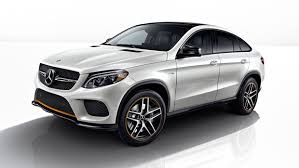

|  |
Germany |
2018 |
75000$ |
 |
Germany |
2018 |
32000% |
 |
Germany |
2014 |
27000$ |
 |
Germany |
2017 |
30000$ |
29 січня 1886 року Карл Бенц отримав патент на свій перший автомобіль. Цей день вважається Днем народження автомобіля, що став легендарним.
З 1930 Mercedes виробляє спецавтомобілі для Папи Римського. Першою такою моделлю стала Mercedes-Benz Typ Nürburg 460. У 2012 році компанія Mercedes-Benz передала Ватикану в подарунок новий папамобіль, створений на основі позашляховика ML (W166).
Mercedes так дорожить своїм іміджем, що зажадало від творців фільму «Мільйонер з нетрів» затерти свої фірмові трьохкінцеві зірки в сценах з бідних районів.Для ідеальної звукоізоляції салону всі Mercedes S-class W140 комплектували подвійними бічними склопакетами, які на вторинному ринку тепер коштують шалених грошей.У Дубаї можна зустріти єдиний у світі Mercedes G55 AMG з двигуном від SLR McLaren потужністю 720 к. с. Автомобіль вагою більше 2 тонн розганяється до 100 км/год за рекордні для позашляховика 4 секунди....